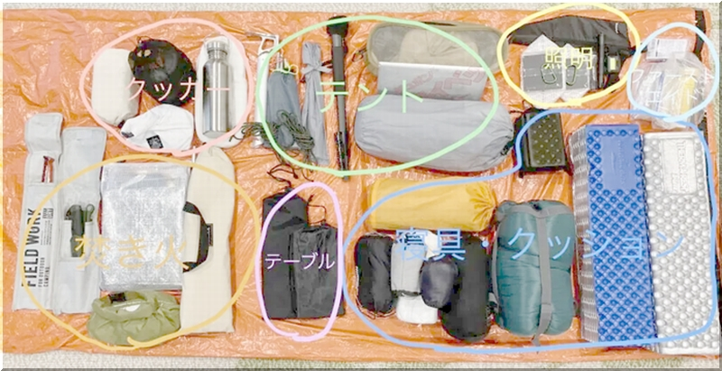
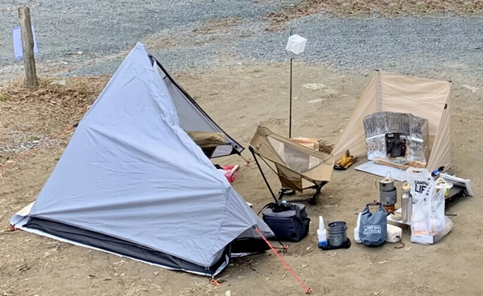

ウルトラライト
- UL・ウルトラライト〔キャンプ・ハイク〕
- ＵＬとは「ウルトラライト」の略で荷物を軽量にしたキャンプやハイキング、登山のスタイルです。 ベースウェイトとは？ 水、食料、燃料などのキャンプで消費するものを除いたバックパックの重量です。 （テントや寝袋など消費しないものは重量に含みます） ちなみに、ウルトラライトの定義はベースウェイト４〜５ｋｇです。 バックパックについてはフレーム無しの軽量な素材（DCF等）を使ったものが主流で、40L前後の大きさでも1kg以下のものが多いです（軽いものだと500g以下） また、道具に関しても軽量なものが多く、サイズや素材を考えて選ぶ事が多い。道具の選び方については、1つで２役以上の役割があるものや、無駄を省く（使わないものは持っていかない）といった思考で選びます。
- Ultra light
- UL stands for "ultralight," a style of camping, hiking, and mountaineering in which luggage is lightweight. What is base weight? It is the weight of the backpack, excluding water, food, fuel, and other items consumed while camping (non-consumables such as tents and sleeping bags are included in the weight). (Items not consumed, such as tents and sleeping bags, are included in the weight.) For your information, the definition of ultralight is a base weight of 4-5 kg.
- 超轻
- UL 是 "超轻 "的缩写，是一种行李轻便的露营、远足和登山运动。 什么是基本重量？ 背包的重量，不包括水、食物、燃料和在营地消耗的其他物品。 (帐篷和睡袋等未消耗的物品也包含在重量中）。 顺便提一下，超轻的定义是基本重量为 4-5 公斤。 至于背包，大多数背包都是用轻质材料（如 DCF）制成，没有框架，即使是 40 升左右的背包，很多重量也不到 1 公斤（轻型背包重量不到 500 克）。 在工具方面，许多工具也很轻便，通常根据尺寸和材料来选择。 在工具的选择上，考虑到一件工具可以发挥两种或两种以上的作用，或减少浪费（即不带不用的东西）。
- キャンプ道具
- 
- キャンプ風景
- 